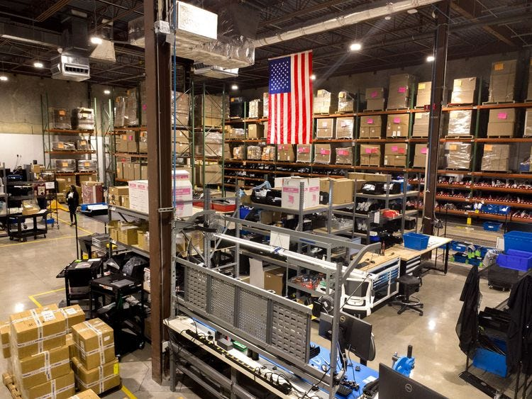
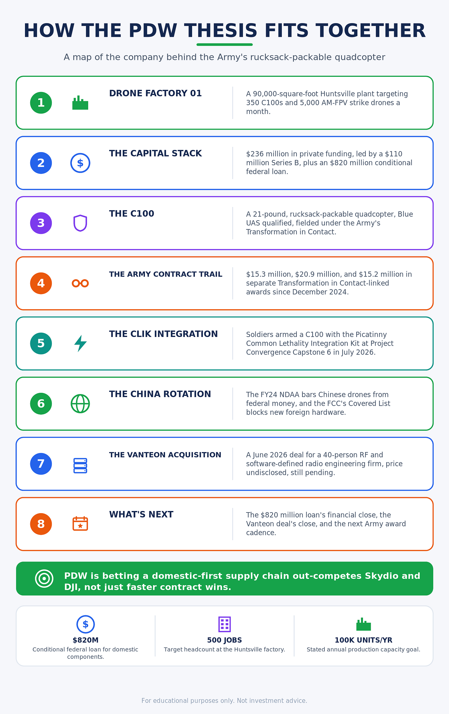
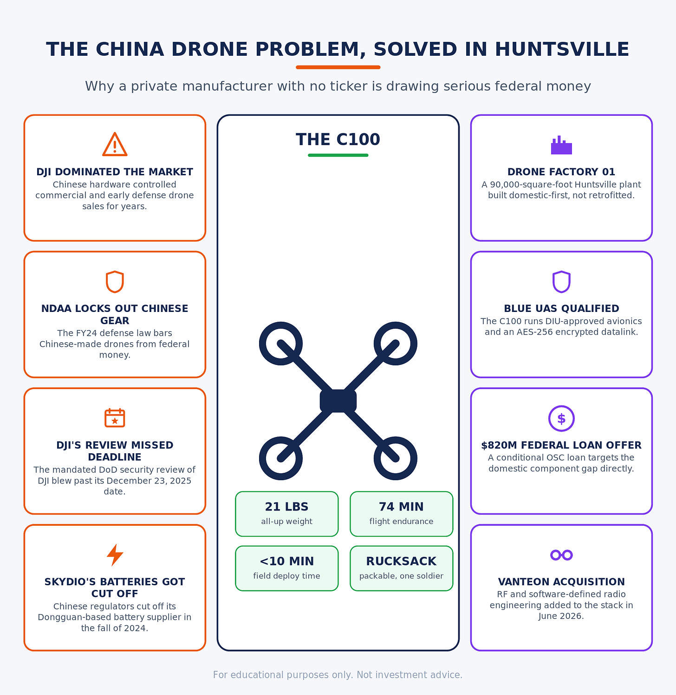
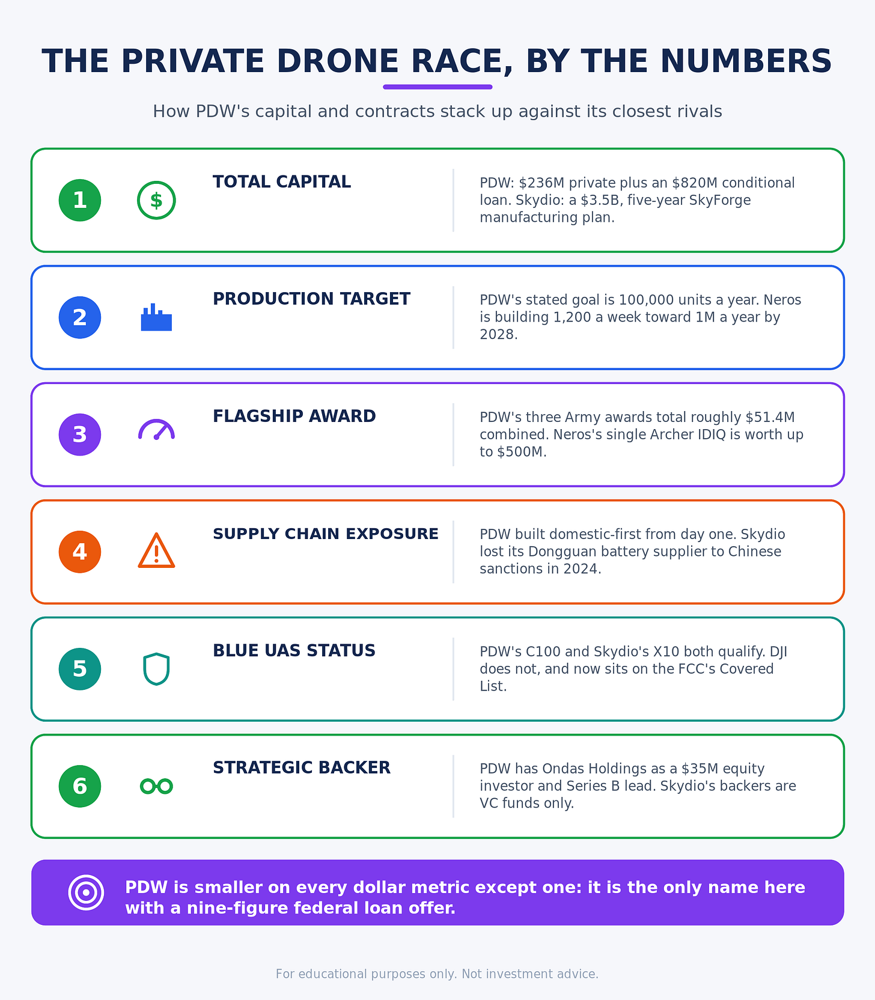
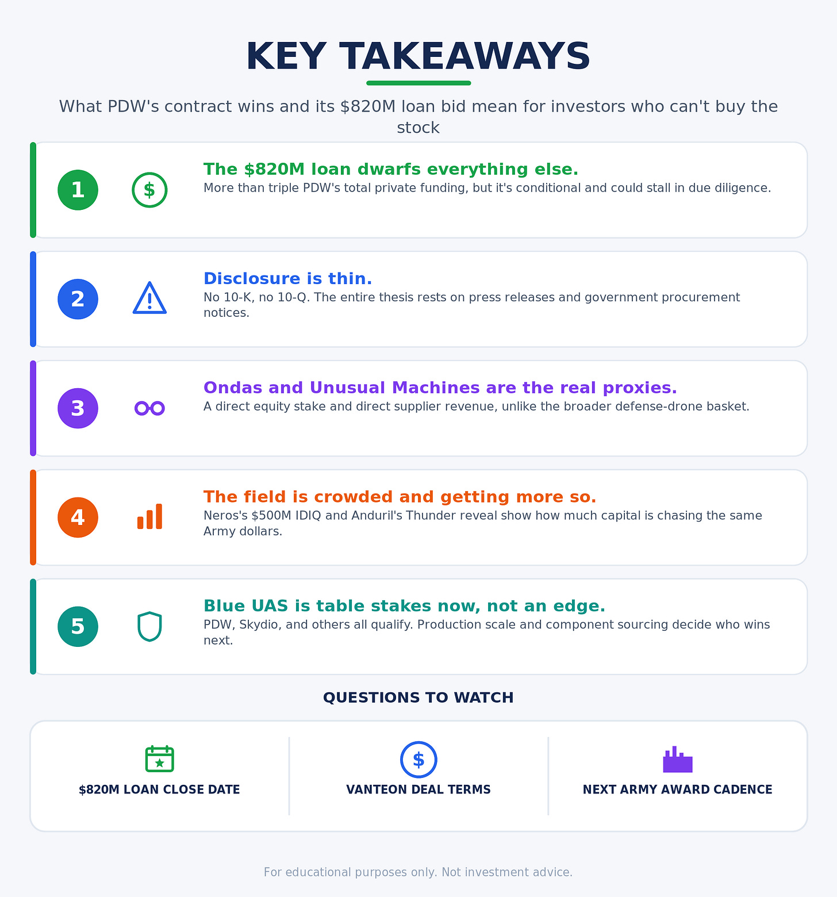

Performance Drone Works doesn't trade on any exchange, file a 10-Q, and won't show up in a brokerage search bar. But it has closed a $110 million Series B in March, banked a $20.9 million Army award, and pulled a Nasdaq-listed company into its cap table as a strategic investor. On July 31, the Pentagon's Office of Strategic Capital offered it a conditional loan commitment of up to $820 million, more than triple everything PDW has raised from private investors combined. The Huntsville, Alabama manufacturer builds the C100, the rucksack-packable quadcopter the Army is fielding under its Transformation in Contact initiative, at the exact moment Congress has locked Chinese-made drone hardware out of federal use. A private company pulling in nine-figure federal loan offers inside a hardware rotation away from China is why The Zero Hour Group has been looking at Performance Drone Works, even though you can't buy the stock.
From Drone Racing League to the Army's Rucksack
PDW traces back to 2018, built by engineers who cut their teeth on the Drone Racing League before reincorporating in Huntsville in 2020. Co-founders Ryan Gury, Trevor Smith, and Matt Higgins set out to build a domestic alternative to the Chinese hardware that dominated the commercial drone market. Gury has since moved into the Chief Innovation Officer seat; James Slider, PDW's chief operating officer for three years, took over as CEO earlier this year.
The company opened a 90,000-square-foot factory in Huntsville in August 2025, targeting 500 local jobs and stating a production ceiling of 350 C100 quadcopters and 5,000 AM-FPV strike drones a month. On November 20, 2025, Ondas Inc (Nasdaq: ONDS) put $35 million into PDW to help fund that buildout, tying the investment to a stated goal of scaling toward 100,000 systems a year, a figure Ondas pegged at roughly $1 billion in annual production value. Four months later, Ondas led a $110 million Series B alongside Hood River, Cedar Pine, Hanwha Asset Management's venture arm, and Booz Allen Ventures, with Houlihan Lokey running the process. Tracxn puts PDW's total funding raised near $236 million.

The C100 and the Contracts Behind It
The C100 weighs about 21 pounds, packs into a rucksack, flies for roughly 74 minutes, and deploys in under 10 minutes with a low audio signature. It runs DIU-approved Blue UAS avionics and an AES-256 encrypted datalink, and it sits on the Pentagon's Blue sUAS list, the roster of drones cleared for government purchase without a case-by-case waiver.
The contract trail is specific. In December 2024, PDW booked more than $15.3 million in Army contracts to field the C100 under Transformation in Contact. A follow-on award added $20.9 million for C100 units and Multi-Mission Payloads, with deployment slated across INDOPACOM, EUCOM, and CENTCOM. Army Contracting Command at Redstone Arsenal awarded PDW a separate $15.2 million contract covering 40 C100X MRD Mission Bundles, 80 Next Vision Raptor EO/IR systems, and 17 UXV SROC ground control stations for the Army's Small Uncrewed Aircraft Systems Product Office. In 2024, the Army picked PDW alongside Anduril to supply small drones for its short-range reconnaissance requirement, and by October 2025 Forbes reported a separate Air Force unit had bought into the same heavy quadcopter.

PDW also ran a 114-sortie flight test series in Texas this spring, validating 20-kilometer range extension and GPS-denied, beyond-visual-line-of-sight autonomous navigation using its Range Extension Kit and Extended Range Antenna. On top of this, its Attritable Multirotor strike drone, built around interchangeable 5-inch, 7-inch, and 10-inch arm configurations with a universal payload interface, entered production in March 2026.
The Army pushed the C100 into new territory in July. At Project Convergence Capstone 6, the service's large-scale experimentation event at Fort Irwin, California, soldiers from the 4th Infantry Division fitted a C100 with the Picatinny Common Lethality Integration Kit on July 20, 2026, a standardized mechanical and electrical interface built to let any Blue UAS platform accept a lethal payload without a custom mount. Paired with an air-droppable conversion kit for mortar rounds, the demonstration put the C100 in an armed strike role, beyond the ISR and logistics mission it was fielded for under Transformation in Contact.
An $820 Million Bet on Domestic Components
On July 31, the Department of War's Office of Strategic Capital signed a conditional loan commitment of up to $820 million with PDW, dwarfing the $110 million Series B and the roughly $236 million in total private funding the company had raised to that point. The financing is debt, still short of financial close. PDW has to clear financial, legal, and technical due diligence before the deal closes, and the company hasn't given a timeline. PDW earmarked the money for domestic manufacturing of the parts inside Group 1 and Group 2 drones, propulsion, power and control systems, and vision systems, rather than for finished C100s. Co-founder and Executive Chairman Matt Higgins framed it as fixing a decade-long gap: the U.S., he said, has lacked a domestic drone component ecosystem despite depending on foreign technology for years. The Series B scaled PDW's own factory floor. This loan targets something upstream, the parts shortage sitting underneath the U.S. drone industry, the same motors, batteries, and sensors that Skydio's SkyForge plan and Congress's China rotation are both chasing. PDW said the financing will also supply components to other domestic manufacturers. If the loan closes and the capacity gets built, PDW becomes a components supplier to its own competitors, and a drone maker in its own right.

Performance Drone Works vs. the China Rotation
The American Security Drone Act, folded into the FY24 NDAA, bars Chinese-made drones from federal money. A mandated Department of Defense security review of DJI missed its December 23, 2025 deadline, and the FCC responded by adding foreign-made drones and their components broadly to the Covered List, a move that blocks new foreign drone hardware from entering the U.S. market rather than targeting DJI alone.
Chinese regulators hit Skydio, the most visible American challenger before PDW's rise, from the opposite direction: they cut off its Dongguan-based battery supplier in the fall of 2024, forcing Skydio into battery rationing for its X10 line. Skydio answered in April 2026 with a $3.5 billion, five-year plan called SkyForge to bring motors, batteries, and sensors onshore. PDW never had that exposure to unwind. It built a domestic supply chain as the starting point rather than a late retrofit, the core of its positioning against both Skydio and DJI in the broader push toward American-made hardware.
Competitors are crowding that pitch. Anduril, still private, shares the Army's 2024 small-drone award with PDW and unveiled Thunder in July 2026, an autonomous attack rotorcraft built for a different mission set that signals the scale of capital chasing this market. Neros landed a $500 million Army IDIQ in July 2026 for its Archer attritable drones, built without Chinese parts, and told the Wall Street Journal it's building 1,200 units a week at its Southern California plant, with a stated goal of a million drones a year by 2028. Piper Sandler analysts now group PDW alongside Anduril, Skydio, Shield AI, Quantum Systems, and Neros as the private names riding the same defense-drone procurement wave. PDW's bet is that its Huntsville factory and Blue UAS-qualified hardware let it out-produce rivals rather than out-market them.
PDW agreed in June 2026 to acquire Vanteon, a 40-person Rochester, New York engineering firm with decades of radio-frequency and software-defined radio experience. The deal is meant to strengthen the GPS-denied and contested-spectrum communications that autonomous defense companies will need as jamming becomes standard on modern battlefields. PDW hasn't disclosed the price, and the deal was still pending as of early August. PDW is also locking down its parts base at the smaller end. In December 2025, it placed a $3.75 million order with Unusual Machines (NYSE American: UMAC), securing a domestic supplier for FPV drone components ahead of the AM-FPV production ramp.
What Wall Street Can Actually Buy
There's no PDW ticker. Retail investors can't buy shares on an exchange, and even accredited investors are limited to thin secondary markets like Nasdaq Private Market or Caplight, where pre-IPO shares trade in small size at prices nobody can independently verify. Public-market investors can buy Ondas Holdings (Nasdaq: ONDS), which holds a direct equity stake from its $35 million investment and its lead role in the Series B. Ondas stock moved roughly 5% higher in premarket trading the day PDW announced the initial investment. Unusual Machines (NYSE American: UMAC) has a narrower but still direct tie. Its $3.75 million purchase order from PDW shows up as revenue on UMAC's own books, real dollars rather than a headline about someone else's supply chain.
Beyond Ondas and Unusual Machines, the broader public basket riding the same Army and DoD budget lines includes AeroVironment (Nasdaq: AVAV), Kratos Defense (Nasdaq: KTOS), Red Cat Holdings (Nasdaq: RCAT), and Draganfly (Nasdaq: DPRO). None of them are Performance Drone Works, but all of them compete for adjacent slices of the same counter-drone and small-UAS spending that PDW's contract wins telegraph. Watching PDW's award cadence gives investors in those names an early read on where Army and Air Force drone budgets are flowing.

Performance Drone Works can't be publicly bought, shorted, or added to a watchlist by ticker. But its contract wins, its Blue UAS qualification, its position inside the China-to-American hardware rotation, and now an $820 million federal loan offer make it one of the clearest signals available for where defense drone spending is going and we will capitalize on their success.
Sources
PDW to Scale Drone Production With $110M in Funding - GovCon Wire
Defense tech startups raise $405 million in new funding rounds - Washington Technology
PDW Secures Over $15 Million in U.S. Army Contracts to Field C100 Drone - Business Wire
PDW Awarded $20 Million Army Contract for 'Transformation in Contact' Initiative - PDW
US Army Invests in PDW's Long-Endurance Quadcopters - Unmanned Systems Technology
PDW Attritable Multirotor Strike Drone Moves Into Production - Unmanned Systems Technology
PDW Opens High-Tech Drone Factory in Huntsville, Eyes 500 Jobs - Made in Alabama
Key Air Force Unit Buys The Army's New Heavy Quadcopter Drone - Forbes
Scout, Bomber, Carrier, Logistics: New U.S. Army Drone Does It All - Forbes
Ondas Announces $35 Million Strategic Investment in Performance Drone Works - Ondas
Ondas Holdings (NASDAQ: ONDS) Commits $35M to PDW and 100K-Drone Yearly Capacity - StockTitan
PDW Raises Over $110M in Series B Financing to Expand Product Offerings - PR Newswire
PDW to Acquire Vanteon to Expand Communications, RF Engineering Capabilities - GovCon Wire
A Trio of CEO Transitions to Highlight - Washington Technology
PDW - 2026 Company Profile, Team, Funding & Competitors - Tracxn
Neros Awarded $500M Army IDIQ for Archer Attritable Drones - GovCon Wire
Skydio Announces $3.5 Billion U.S. Manufacturing Expansion - The Drone Girl
Army Taps Anduril, Performance Drone Works to Supply Small Uncrewed Aircraft Systems - ExecutiveBiz
Huntsville's PDW Poised for Major Expansion With $820 Million Federal Commitment - 256 Today
DOD Offers PDW Up To $820M Loan For Drone Component Manufacturing - Aviation Week
U.S. Army Soldiers Test a Plug-and-Play System for Armed Drones - Defence Blog
US Army Command's Picatinny CLIK Common Lethal Drone Interface Makes Progress - Shephard Media
Drone Manufacturer to Acquire Pittsford-Based Tech Firm - Rochester Business Journal
Thunderstruck: Anduril Unveils Autonomous Attack Rotorcraft - Defense News